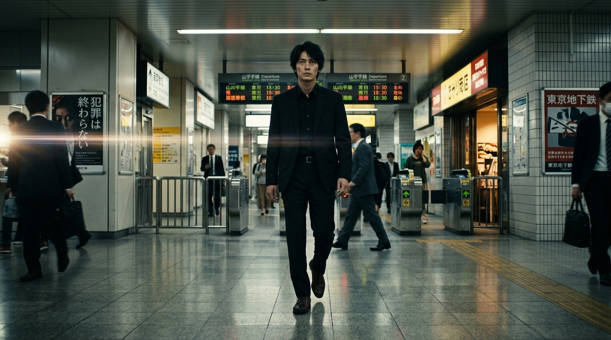

GENESIS モニター3: 4K ACES シネマシアター ＆ 極上流暢TTS (v46)
🎙️ English (Hollywood Native HD)
🎙️ 日本語 (Tokyo Studio Master)
🎙️ Español (Castilian Pro)
🎙️ Français (Paris Noir)
🎙️ 中文 (Mandarin Prime)
2.39:1 Scope
16:9
全画面

「地下3.5メートル、逃げ場はない。ここが奴らの終着点だ。」
Cut 01: 原宿地下コンコース
ターンアウト 180° 旋回
Chirp 3 HD
流暢音声再生
00:00:05:12 / 00:00:15:00
ACES 1.3 / DCI-P3 4K